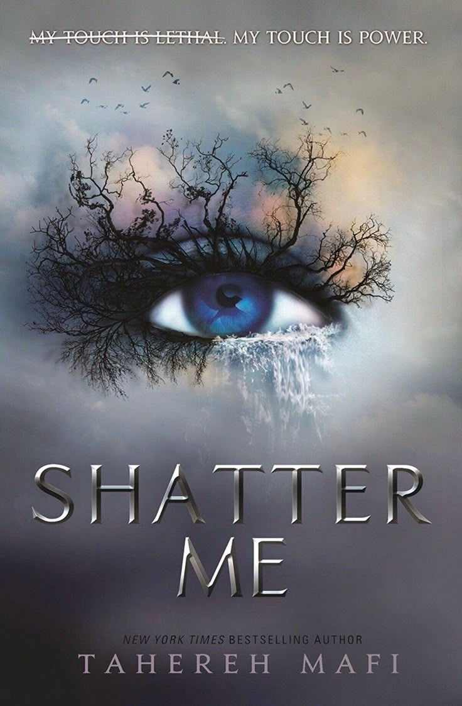

Shatter Me

„Shatter Me“ სერია - ტაჰერე მაფი (Tahereh Mafi)
ჟანრი: დისტოპიური ფანტასტიკა, თინეიჯერული რომანი, რომანტიკული თრილერი.
ანოტაცია სერიისთვის:
„Shatter Me“ სერია მოგვითხრობს ჯულიეტ ფერარას ისტორიას — გოგონას, რომელიც საშიშ ძალას ფლობს: მისი შეხება კლავს. მას ბნელი წარსული აქვს — 264 დღე გაატარა იზოლაციაში, საზოგადოებისგან მოშორებით, რადგან მისი უნარი ყველას აშინებდა. მაგრამ ყველაფერი იცვლება, როცა დიქტატორული რეჟიმი, სახელწოდებით „The Reestablishment“, გადაწყვეტს ჯულიეტის ძალა იარაღად გამოიყენოს.
გაქცევისა და სიყვარულისთვის მებრძოლი ჯულიეტი საკუთარი თავის აღმოჩენას იწყებს — აღარ სურს შეეშინდეს საკუთარი თავის, სურს იბრძოლოს, იცოცხლოს და შეიყვაროს. თუმცა ეს გზა მარტივი არ არის, მით უფრო, როცა აღმოჩნდება ჩათრეული პოლიტიკური კონფლიქტების, ბრძოლების, სიყვარულისა და პიროვნული ტრანსფორმაციის ეპიცენტრში.
სერიაში ცენტრალური თემებია: ძალაუფლებისა და იდენტობის ძიება, ტრავმისგან გათავისუფლება, რომანტიკული დრამა და ამბოხება დისტოპიურ სამყაროში.
სერიის სხვა წიგნები:Shatter Me, Unravel Me, Ignite Me Restore Me, Defy Me, Imagine Me, რამდენიმე ნოველა დამატებით პერსპექტივებში
ეს სერია განსაკუთრებით მოეწონებათ მათ, ვისაც მოსწონს ემოციური სიღრმე, ძლიერი რომანტიკული ხაზი და ქალის პერსპექტივით მოთხრობილი ამბები ძლიერი და დაუმორჩილებელი გმირით.